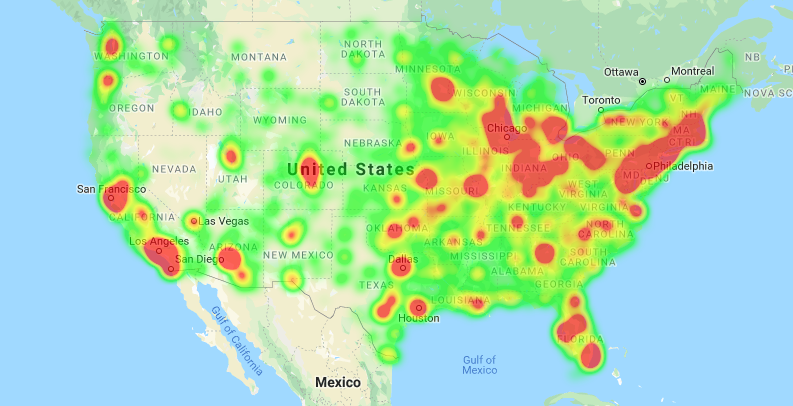

Income usually associated with morbidity and mortality across the income distribution. Income strongly influences health through various behavioral, clinical, social, and environmental systems. Isolating the unique contribution of income to health can be difficult because this relationship intersects with many other social risk factors.
Examining the links between income and health is increasingly important, given current economic trends and growing income inequality in the United States.
It’s also clear that while low income contributes to poor health status, poor health can also contribute to lower income. Poor health can limit one’s ability to work, reduce economic opportunities, inhibit educational attainment, and lead to medical debt and bankruptcy. This can create a negative feedback loop—what Jacob Bor and Sandro Galea have called twenty-first-century health-poverty trap.
Policy initiatives that supplement income and improve educational opportunities, housing prospects, and social mobility and can reduce poverty and lead to downstream health effects not only for low-income people but also for those in the middle class. You can see the heatmap below with density of colleges displayed across the US.

The complex relationship between low educational attainment, low income, and higher risk of disease and early death has likely grown stronger in an increasingly global and information-driven economy. Studies show that Americans at all income levels are less healthy than those with incomes higher than their own. See below the interactvie visualization that would show the correlation between Healthcare, Poverty and Income Rate across United States.You can click on axis to check correlation between multiple groups